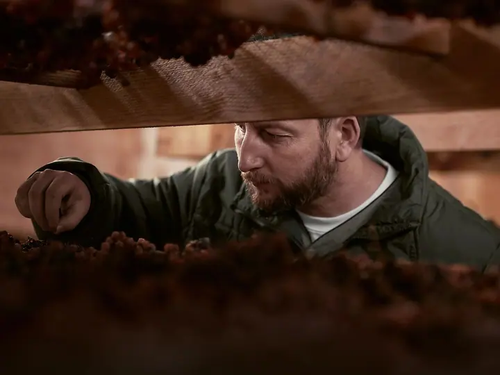
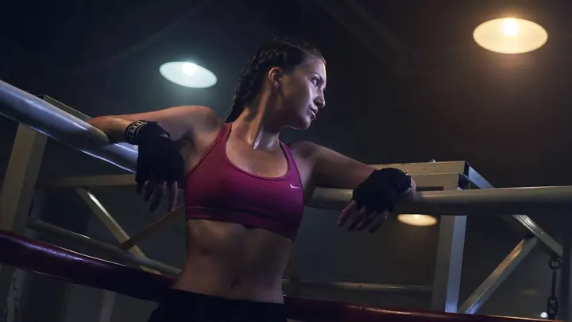
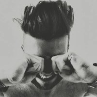

01 / 04
Reklamní fotografie
Pomáhám agenturám, firmám a lidem s vlastním produktem vyprávět jejich příběh. Fotky stavím na skutečných lidech a jejich řemesle, ne na pózách.
Zeptat se na termín→



Fotografie, které vyprávějí příběh
Zeptat se na termín →(01) Ahoj
Jmenuji se Marek Dvořák a jsem reklamní fotograf, filmař a dokumentarista . Vyprávím příběhy lidí, kteří tvoří, pečují o zvířata a o půdu , od palíren mezcalu v Mexiku po moravské vinice .
(02) Co dělám
01 / 04
Pomáhám agenturám, firmám a lidem s vlastním produktem vyprávět jejich příběh. Fotky stavím na skutečných lidech a jejich řemesle, ne na pózách.
Zeptat se na termín→02 / 04
Natáčím krátké dokumenty o lidech, kteří tvoří a mění svět k udržitelnějšímu. Například celý vinařský rok v patnácti vinařstvích Malých Karpat.
Zeptat se na termín→03 / 04
Dlouhodobě spolupracuji s organizacemi kolem udržitelného zemědělství a ochrany přírody. Ukazuji témata, která na první pohled vidět nejsou.
Zeptat se na termín→Dále nabízím
Portréty pro firmy, weby i osobní značku. Přirozené světlo, klidná atmosféra a člověk takový, jaký opravdu je.
↗(04) Postup
Od první zprávy po hotovou galerii.
Krok 1 z 4
Napíšete mi nebo zavoláte, co chcete vyprávět a komu. Společně ujasníme, jestli to bude fotka, video, nebo obojí.
Krok 2 z 4
Než vyrazíme, poznám lidi a místo, o kterých bude řeč. Každý příběh má svůj vlastní scénář, aby nevypadal jako ten předchozí.
Krok 3 z 4
Pracuji přímo tam, kde se věci dějí: ve vinici, na farmě, v dílně nebo v ateliéru. Fotím přirozeně a s ohledem na lidi před objektivem.
Krok 4 z 4
Fotky vyberu a upravím, video sestříhám do finální podoby. Výsledek dostanete připravený pro web, sociální sítě i tisk.

Hledám to, co je pod povrchem
(05) Za objektivem
Vždycky mě přitahovaly příběhy zajímavých lidí. Těch, kteří vytvářejí emoce, tvarují hmotu nebo se starají o zvířata. Chci se podívat hluboko pod povrch, tam, kde berou svou sílu a motivaci.
Fotím a natáčím pro neziskové organizace, agentury, farmáře i lidi, kteří mají svůj produkt. Spolupracoval jsem například s Nadací Partnerství, Demeterem nebo Živou půdou. Dokumentoval jsem vinařský rok v Malých Karpatech i lidi, kteří žijí v souladu s krajinou a dělají něco užitečného.
Kromě kamery se věnuji UI/UX designu a skládám hudbu. Když zrovna nefotím, cestuji, piju dobré víno a nepohrdnu kvalitní whisky.

Marek
Marek Dvořák · Reklamní fotograf a dokumentarista
Nejčastěji pro neziskové organizace, agentury, farmáře a lidi, kteří mají vlastní produkt a chtějí o něm vyprávět příběh.
Obojí. Vedle fotografie natáčím krátké dokumentární filmy, a často se obojí spojí v jednom projektu.
Každý projekt je jiný, proto cenu stanovuji podle rozsahu. Napište mi, co chystáte, a pošlu vám nabídku.
Ano, fotím a natáčím po celé republice, od Moravy po hory. Když to projekt vyžaduje, rád vyrazím i dál.
(07) Kontakt
Napište pár vět o tom, co si představujete, a termín, který se vám hodí.